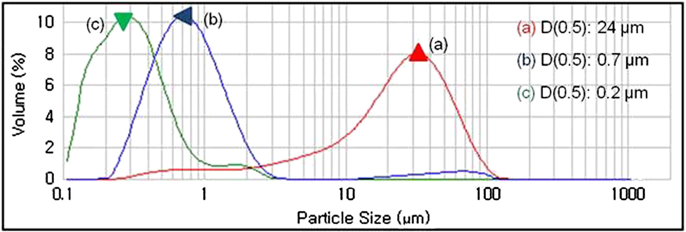
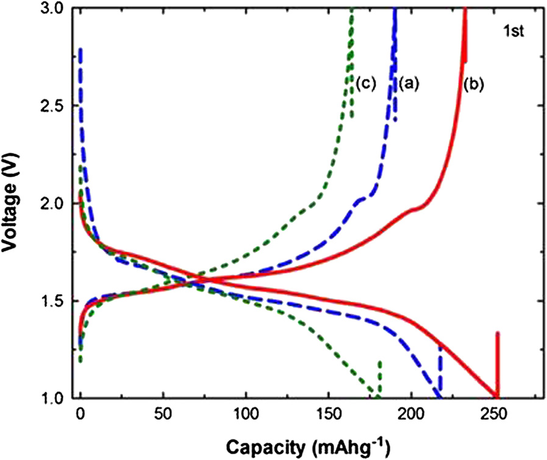
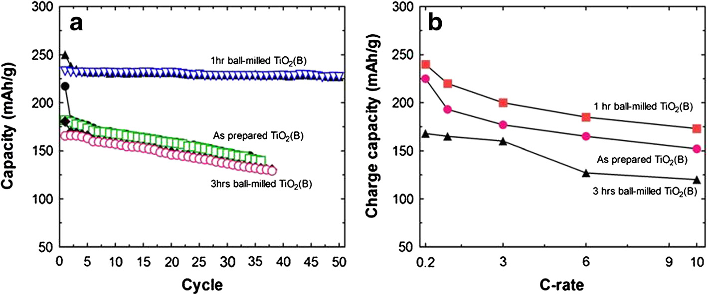

SEM images for planetary-milled TiO 2 (B) powders with 300 rpm and various milling times. (a) as-prepared TiO 2(B), (b) 1 hr ball-milled TiO 2(B), and (c) 3 hrs ball-milled TiO 2(B).
Figure 1

Particle size distribution of planetary-milled TiO 2 (B) with milling times by laser scattering (PSA) shown in Figure 1 : (a) as-prepared TiO 2(B), (b) 1 hr ball-milled TiO 2(B), and (c) 3 hrs ball-milled TiO 2(B).
Figure 2
XRD patterns (a) and Raman spectra (b) of the planetary ball-milled TiO 2 (B) samples used in Figure 1 .
Figure 3

The initial charge–discharge curves of planetary-milled TiO 2 (B) with milling times by laser scattering (PSA) shown in Figure 1 . (a) as-prepared TiO 2(B), (b) 1 hr ball-milled TiO 2(B), and (c) 3 hrs ball-milled TiO 2(B) at 0.2 C.
Figure 4

Charge–discharge cycle (a) and C-rate characteristics (b) of planetary-milled TiO 2 (B) with milling times shown in Figure 1 .